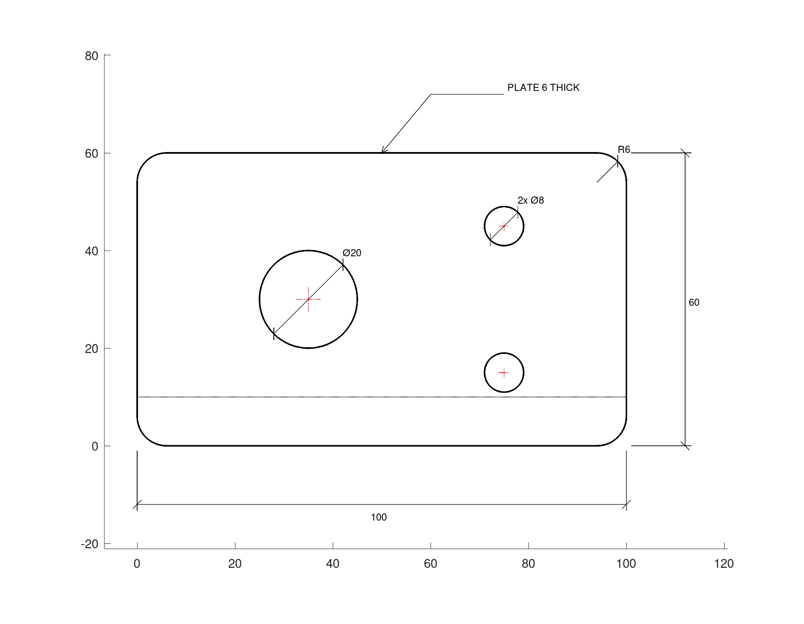
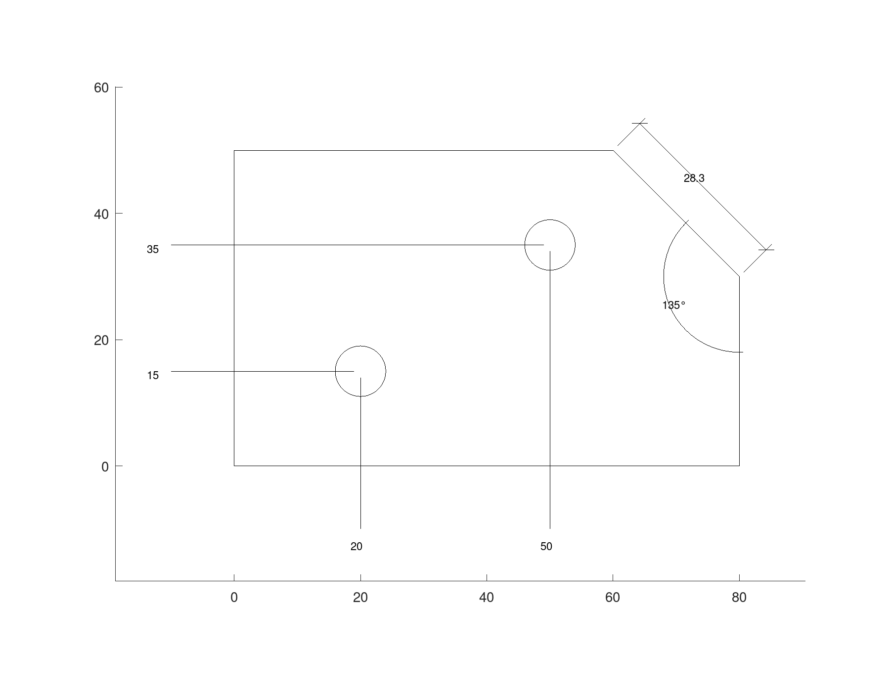
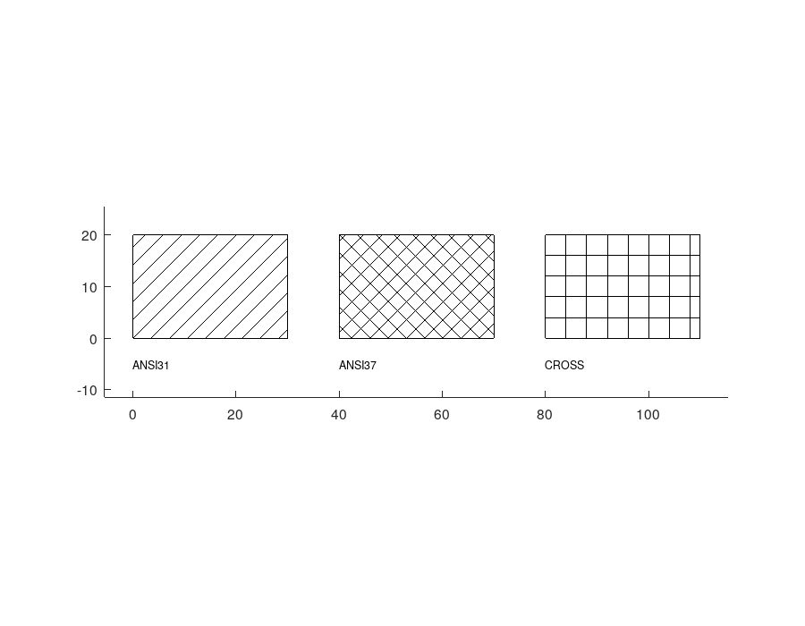
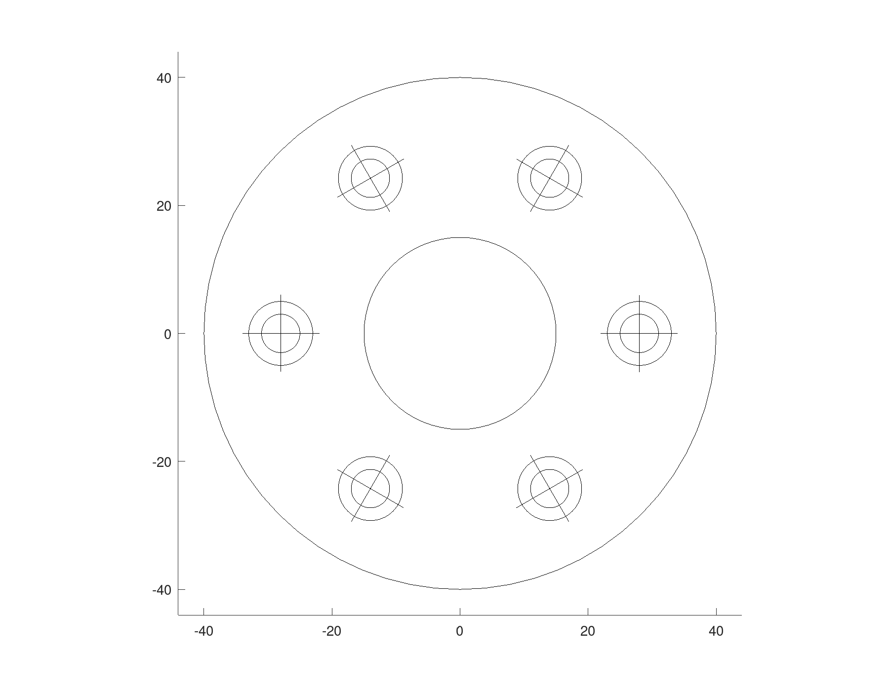
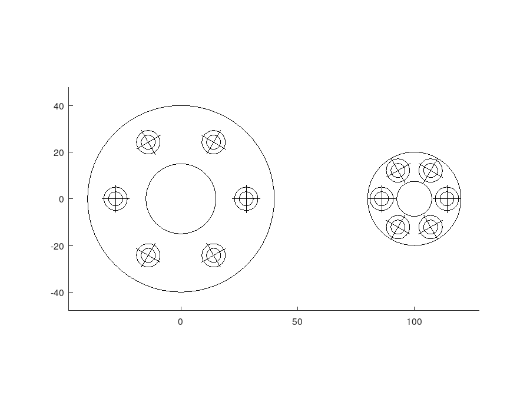
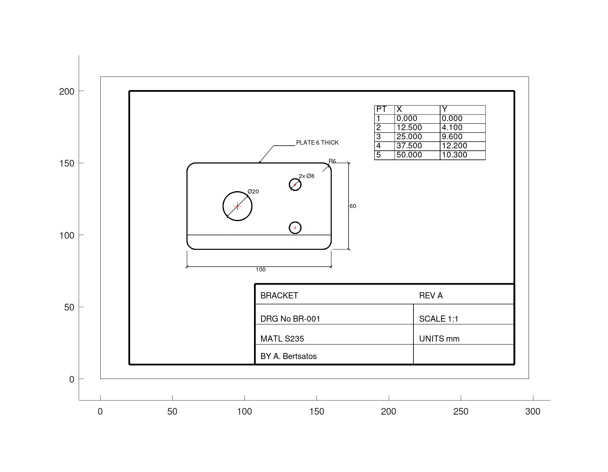

Technical drawings
A draw.Drawing holds a technical drawing as data: geometry, text, hatches and dimensions on named layers, each layer with a colour, a line type and a line weight. The same drawing is plotted, printed to scale, set in LaTeX and written to DXF.
Layers and the pen
A drawing draws the way a CAD program does, with a current pen: Layer, Linetype, Colour and LineWeight are set first, and every entity appended after takes them. The last three are 'byLayer' unless set, so an entity takes them from its layer, and layer gives each layer its properties. draw.linetype lists the line types and draw.colour turns a colour name into the AutoCAD colour index a DXF file stores.
draw.linetype ()
draw.colour ('red')ans =
{
[1,1] = CONTINUOUS
[1,2] = HIDDEN
[1,3] = CENTER
[1,4] = PHANTOM
[1,5] = DASHED
[1,6] = DASHDOT
[1,7] = DOT
}
ans = 1The layers of a plate drawing, with the line weights of ISO 128: thick outlines, thin hidden lines, centre lines and dimensions.
D = draw.Drawing ('bracket');
D = D.layer ('OUTLINE', 'LineWeight', 0.5);
D = D.layer ('HIDDEN', 'Linetype', 'HIDDEN', 'LineWeight', 0.25);
D = D.layer ('CENTRE', 'Linetype', 'CENTER', 'Colour', 'red', ...
'LineWeight', 0.25);
D = D.layer ('DIMENSIONS', 'LineWeight', 0.25);
layers (D)ans =
{
[1,1] = 0
[1,2] = CENTRE
[1,3] = DIMENSIONS
[1,4] = HIDDEN
[1,5] = OUTLINE
}Geometry
A mounting plate: its outline a polyline with rounded corners, a bore and two smaller holes as circles, all on the layer OUTLINE. Each append returns the new drawing, so appends chain.
D.Layer = 'OUTLINE';
D = D.polyline (fillet (geom.Polyline ([0, 0; 100, 0; 100, 60; 0, 60], ...
'Closed', true), 6));
D = D.circle ([35, 30], 10);
D = D.circle ([75, 15], 4).circle ([75, 45], 4);Centre lines go on their own layer, which draws them red and in the CENTER line type. centremark with no centre marks every circle and arc already in the drawing. A step machined on the underside, hidden from above, is a line on the layer HIDDEN. Changing the layer is all it takes.
D.Layer = 'CENTRE';
D = D.centremark ();
D.Layer = 'HIDDEN';
D = D.line ([0, 10], [100, 10]);Dimensions
A dimension is stored by what it measures, not by the number on it, so it measures again whenever the drawing is drawn. dim measures between two points, 'horizontal', 'vertical' or, by default, along the line joining them; the sign of the offset picks the side. diam dimensions a circle across and radius an arc. A label replaces the measured figure, and the codes of draw.symbol put a diameter or degree sign in it. leader points a note at a feature.
D.Layer = 'DIMENSIONS';
D = D.dim ([0, 0], [100, 0], -12, 'horizontal');
D = D.dim ([100, 0], [100, 60], -12, 'vertical');
D = D.diam ([35, 30], 10);
D = D.diam ([75, 45], 4, 45, ['2x ', draw.symbol('diameter'), '8']);
D = D.radius ([94, 54], 6, 45);
D = D.leader ([50, 60; 60, 72; 75, 72], 'PLATE 6 THICK');
D
plot (D);D =
draw.Drawing 'bracket' with 14 entities on 5 layers
line 1
polyline 1
circle 3
dim 2
diam 2
radius 1
centremark 3
leader 1
current layer: 'DIMENSIONS'
A part with many features is often dimensioned from one datum, a corner, with ordinate: each feature's distance from it along x or y, at the end of a leader. angdim dimensions the angle at a vertex between two arms, counter-clockwise from the first to the second, and dim with no direction measures the chamfer along its own length.
O = draw.Drawing ('datum');
O = O.polyline (geom.Polyline ([0, 0; 80, 0; 80, 30; 60, 50; 0, 50], ...
'Closed', true));
O = O.circle ([20, 15], 4).circle ([50, 35], 4);
O = O.ordinate ([0, 0], [20, 15], 'x', [20, -10]);
O = O.ordinate ([0, 0], [50, 35], 'x', [50, -10]);
O = O.ordinate ([0, 0], [20, 15], 'y', [-10, 15]);
O = O.ordinate ([0, 0], [50, 35], 'y', [-10, 35]);
O = O.angdim ([80, 30], [60, 50], [80, 0], 12);
O = O.dim ([80, 30], [60, 50], -6);
plot (O);
Hatches
hatch fills a geom.Region, its holes left clear. ANSI31, 45 degree lines, is the default and means cut material; geom.hatchlines lists the other patterns. An angle and a spacing turn and space the pattern.
geom.hatchlines ()
sq = [0, 0; 30, 0; 30, 20; 0, 20];
H = draw.Drawing ('hatches');
H = H.hatch (geom.Region (sq));
H = H.hatch (geom.Region (sq + [40, 0]), 'ANSI37');
H = H.hatch (geom.Region (sq + [80, 0]), 'CROSS', 0, 4);
H = H.text ([0, -6], 'ANSI31').text ([40, -6], 'ANSI37');
H = H.text ([80, -6], 'CROSS');
plot (H);ans =
{
[1,1] = ANSI31
[1,2] = ANSI32
[1,3] = ANSI37
[1,4] = HORIZONTAL
[1,5] = VERTICAL
[1,6] = CROSS
}
Blocks
A feature drawn many times is defined once as a block, from a drawing of its own, and placed with insert, at a point, turned and scaled if wanted. Every insert refers to the one definition, so redefining the block changes them all, and a DXF file holds it once.
B = draw.Drawing ('bolt');
B = B.circle ([0, 0], 5).circle ([0, 0], 3);
B = B.line ([-6, 0], [6, 0]).line ([0, -6], [0, 6]);
F = draw.Drawing ('flange');
F = F.circle ([0, 0], 40).circle ([0, 0], 15);
F = F.block ('bolt', B);
for a = 0:60:300
F = F.insert ('bolt', 28 * [cosd(a), sind(a)], a);
endfor
F
plot (F);F =
draw.Drawing 'flange' with 8 entities on 1 layer
circle 2
insert 6
current layer: '0'
Moving and combining
transform moves, turns, scales or mirrors every entity of a drawing, each as itself: a circle keeps its centre and scales its radius, a dimension keeps measuring. merge puts drawings together. A view drawn once at the origin is placed on a sheet this way.
G = merge (F, F.transform ('scale', 0.5).transform ('translate', [100, 0]));
plot (G);
A sheet
draw.titleblock gives the border of an ISO sheet and its title block, filled in from a struct, on the layer FRAME. draw.coordtable gives a table of point coordinates, for a profile that cannot be dimensioned. Both are drawings, and merge puts them on the sheet with the view.
A plot draws text at a fixed size on the screen. 'FontScale', in points per millimetre, draws each string at its own height instead, which suits a whole sheet.
f = struct ('title', 'BRACKET', 'drawing', 'BR-001', 'material', 'S235', ...
'scale', '1:1', 'units', 'mm', 'drawnby', 'A. Bertsatos', ...
'revision', 'A');
T = draw.titleblock ('A4', f);
P = [0, 0; 12.5, 4.1; 25, 9.6; 37.5, 12.2; 50, 10.3];
C = draw.coordtable (P, [190, 190]);
sheet = merge (T, D.transform ('translate', [60, 90]), C);
plot (sheet, 'FontScale', 2.5);
Paper, LaTeX and DXF
print puts a drawing on paper at a stated scale, not merely fitted to the page: a distance measured on the sheet times the scale is the distance on the part. Without a 'Scale' it takes the largest of the ISO scales that fits. The format follows the extension: PDF, EPS and SVG, or PNG, JPEG and TIFF. It returns the sheet size and the scale it used.
[paper, scale] = print (D, 'bracket.pdf')paper =
297 210
scale = 1A sheet framed by draw.titleblock runs to the trimmed edge of the paper, so it is printed with no margin. It then comes out at 1:1 on its own A4 sheet, the scale its title block states.
[paper, scale] = print (sheet, 'sheet.pdf', 'Margin', 0)paper =
297 210
scale = 1tikz returns the drawing as TikZ code, for a LaTeX report, at a stated scale. Its first lines:
t = tikz (D, 'Scale', 1);
L = strsplit (t, "\n");
printf ("%s\n", L{1:5});% Generated by the drafting package: draw.Drawing.tikz
% Drawing: bracket
% Plot scale 1:1. Coordinates are model millimetres.
\tikzset{
drCENTRE/.style={red, dash pattern=on 1.25mm off 0.25mm on 0.25mm off 0.25mm, line width=0.25mm}, % layer 'CENTRE'write saves the drawing as a DXF file for a CAD program, every entity on its layer with its line type and colour, and draw.read reads one back. Dimensions come back as dimensions, measuring again. Centre marks and leaders, which DXF has no entity for, come back as the lines and text they are drawn with, which is why the count grows. How each entity is written and read is set out in DXF and the classes.
write (sheet, 'sheet.dxf');
E = draw.read ('sheet.dxf')E =
draw.Drawing 'imported' with 60 entities on 9 layers
line 20
polyline 6
circle 3
text 26
dim 2
diam 2
radius 1
current layer: '0'